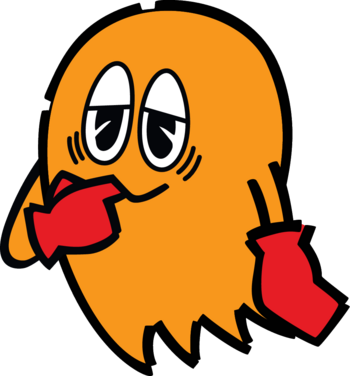

Clyde
Clyde (クライド Kuraido), also known as Guzuta, is one of the four main ghosts in the Pac-Man series. While the other three ghosts are off chasing Pac-Man, Clyde will be off doing his own thing. He is typically portrayed as the least intelligent and most submissive ghost. He is good friends with Blinky, Pinky, and Inky.
While originally one of the main antagonists in the first Pac-Man arcade game, his role has largely been diminished to being a secondary antagonist or an ally in recent incarnations.
Characteristics
Appearance
Clyde is an orange-colored ghost. He has a somewhat dopey-looking expression. He is typically limbless within games, but some incarnations show him with arms, sometimes with red gloves as well.
In the TV series and Pac-Land, Clyde appears similar to a 1920's mob boss with a bowler derby hat. In Pac-Man Party and Ghostly Adventures, Clyde is very large, and has a curl of hair on his head. His appendages were made more tentacle-like as well.
Personality
Clyde in the early games tended to be very cowardly. His personality is probably best described by his alternate Japanese "Character" name, Crybaby. He doesn't mess with Pac-Man much, and is sometimes shown to be afraid of him; he prefers to keep his distance as much as possible.
In Pac Man and the Ghostly Adventures Clyde is shown to be more passive than the other ghosts and will sometimes try to break up fights between Blinky and Inky but he is also not shown to be very bright. But not completely stupid. He also loves animals. He is also one of only two ghosts who is good pretty much all year around according to Santa-Pac.